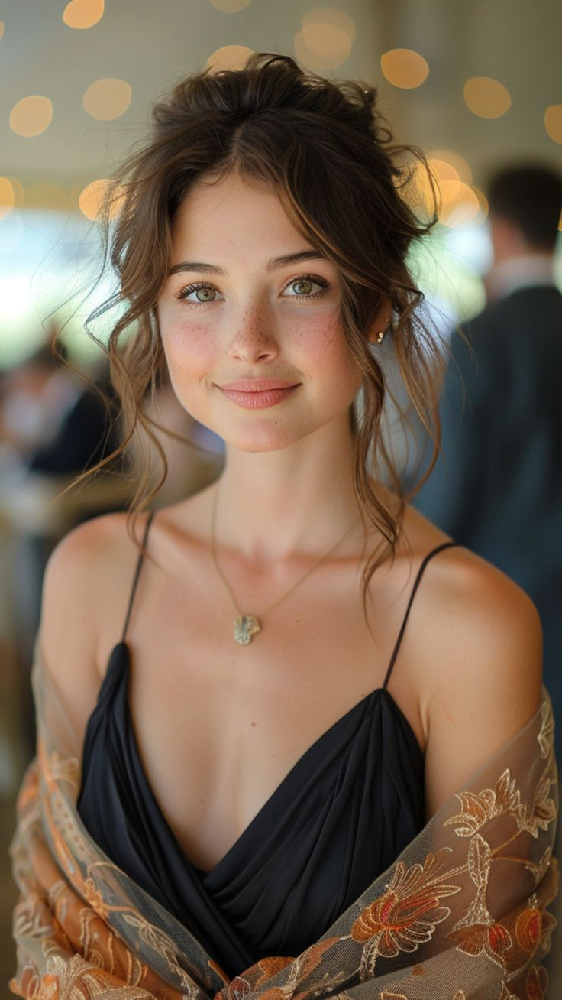
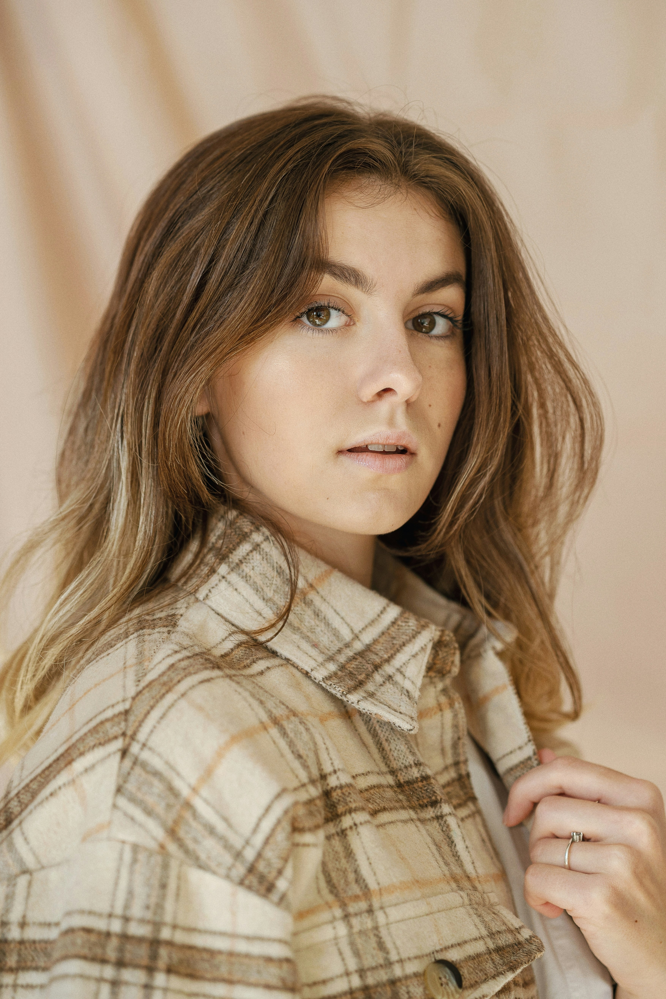
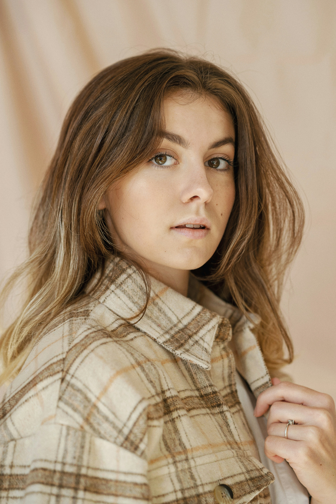
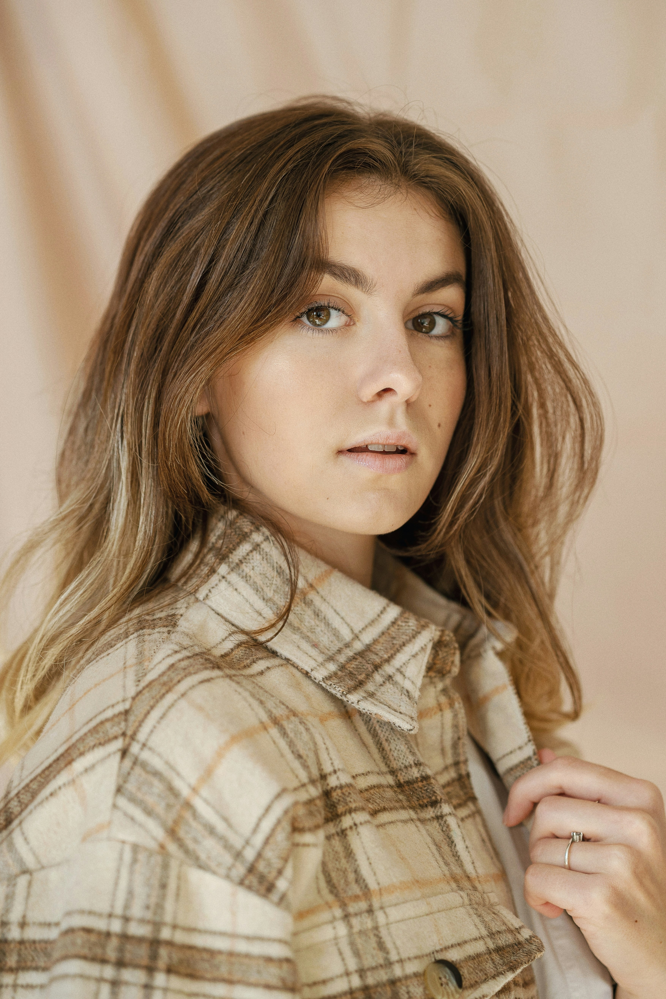
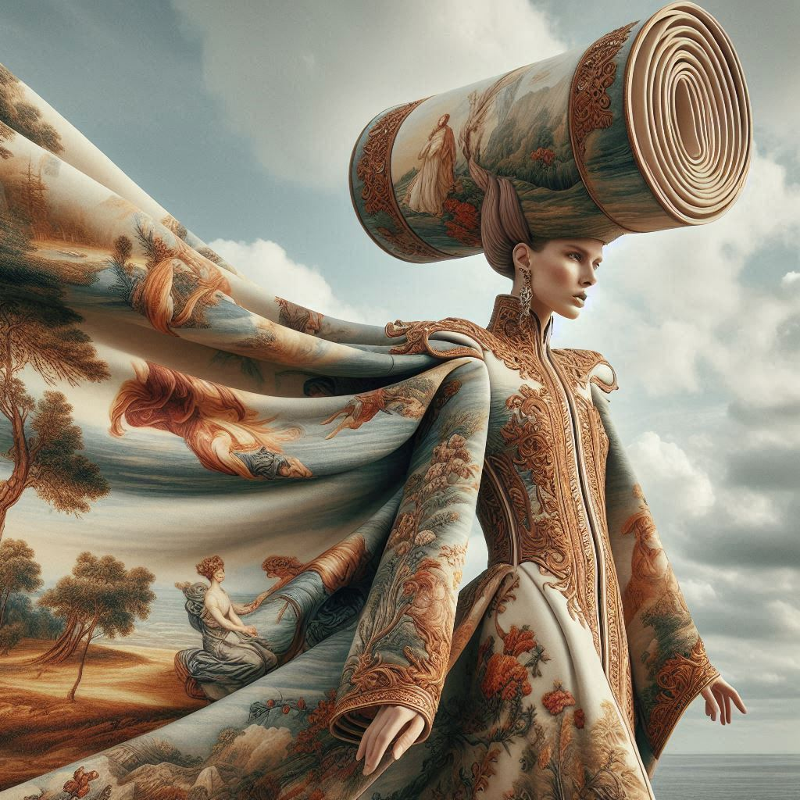
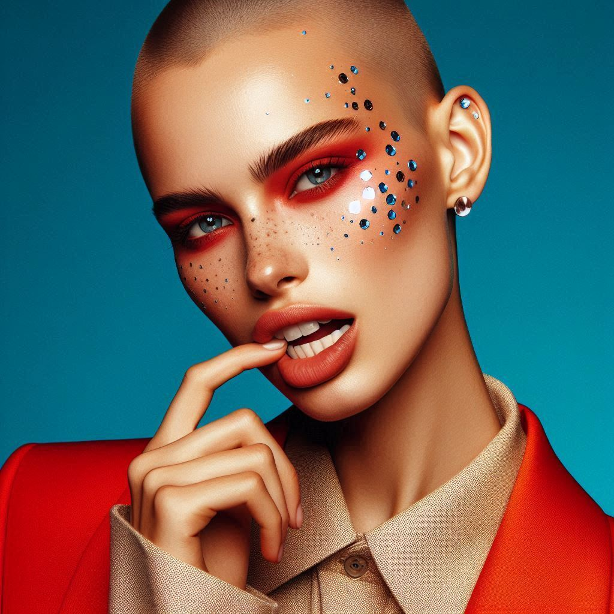
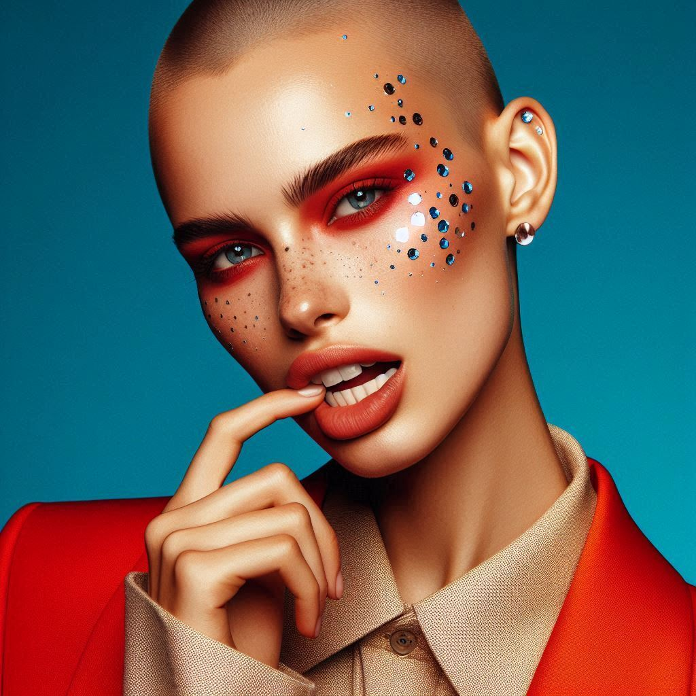

Photography



 


ALL
A
B
C
D
E
F
G
H
I
J
K
L
M
N
O
P
Q
R
S
T
U
V
W
X
Y
Z

Hannah Motler
features in a
fashion story by
the lake for
Vogue new shot
Such exposure to the fashion and
beauty industries enabled her
passion for branding and
creativity to tranistion from one
side of the camera to the other.
VOGUE / SHOT
Masion ARTC:memories and culture, the base of futuristic fashiona nd awareness. Tilila Oulhaj look

The image depicts a vibrant and dynamic scene of a woman in a striking orange dress with black polka dots. The dress appears to flow dramatically in the wind, with a whimsical and carefree vibe. She stands against a vivid sky, blending fluffy white clouds and a radiant blue hue, creating a sense of joy and movement. The angle is low, emphasizing the dress's flair and the uplifting energy of the moment.
UPDATES

Mens Fashion
Khadim & Tom Ford
25th March 2020
Womens Fashion
Arena Homme
3rd Februrary 2020

Boys Fashion
Jing for Wonderland
14th February 2020

Girls Fashion
Glass x Bella
08th January 2020

Movie shot
London based Tom Mitchell has a distinct aesthetic within his photography & moving image
Tom's calm nature nad eagerness to create; while still maintaining a high level of professionalism; has seen him slide into the fashion indutsry - photographing campaign, look books, editorials, portraits, short films and TV commercials.
 

The image depicts a vibrant and dynamic scene of a woman in a striking orange dress with black polka dots. The dress appears to flow dramatically in the wind, with a whimsical and carefree vibe. She stands against a vivid sky, blending fluffy white clouds and a radiant blue hue, creating a sense of joy and movement. The angle is low, emphasizing the dress's flair and the uplifting energy of the moment.

"Body" and "No Lie" - 90s inspired R&B sound that is drawing a new comparisons to Dua Lipa
There aren't many 22 year-olds with the introspection of Icelandic artist Glowdie - real name Sara Petursdotirr - but then again, she's always been one for doing her own thing.
Premiere models 2020
Premiere models 2020
Premiere models 2020
Premiere models 2020
Premiere models 2020
BLOG
B Jack Thompson features in a story crossing bridges for ID Magazine shot by Maxwell Tomilnson, styled by Louise Prier Tisdall.